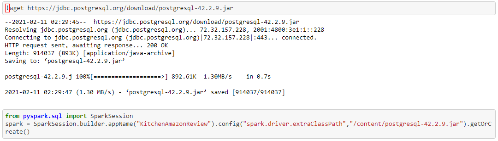

Photo by
Eutah Mizushima
on
Unsplash
Great things are done by a series of small things brought together. —Vincent van Gogh
Hello. My name is Erika. I am a hard-working Data Analyst with proficiency in front-end and back-end web development. I earned a certification in Data Science at Rutgers University Data Science & Visualization Bootcamp, building upon the hours of collaboration with mentors and peers of working with big data sets using Python, Pandas, JavaScript, PostgreSQL, and R. I am a well-driven problem solver who likes to think outside of the box, collaborating with peers and mentors of working big data sets. I am also an experienced designer with a Bachelor of Fine Arts in Design. And I worked as a Graphic Designer at Arc International North America, the world-leading French manufacturer of glassware. I mainly develop B2B and consumer packaging designs and decors for kitchenware and accessories.
This is my paw friend.

My skills are:
Python
Pandas
JavaScript
CSS (Cascading Style Sheets)
PostgreSQL
R (Programming Language)
Adobe Creative Suite
Front and Back-end Web Development
Here are highlights of my latest Data Analytic work.
Click on each image to see
details.
Welcome to the United States Geological Survey, or USGS for short! The USGS is responsible for providing scientific data about natural hazards, the health of our ecosystems and environment; and the impacts of climate and land-use change. Their scientists develop new methods and tools to supply timely, relevant, and useful information about the Earth and its processes. As a new hire, you will be helping them out with an exciting new project!
The USGS is interested in building a new set of tools that will allow them visualize their earthquake data. They collect a massive amount of data from all over the world each day, but they lack a meaningful way of displaying it. Their hope is that being able to visualize their data will allow them to better educate the public and other government organizations (and hopefully secure more funding..) on issues facing our planet.


Video Links to the Earthquake World Map
To Learn More: Earthquakes Github Page
Many of Amazon's shoppers depend on product reviews to make a purchase. Amazon makes these datasets publicly available. However, they are quite large and can exceed the capacity of local machines to handle. One dataset alone contains over 1.5 million rows; with over 40 datasets, this can be quite taxing on the average local computer. Your first goal for this assignment will be to perform the ETL process completely in the cloud and upload a DataFrame to an RDS instance. The second goal will be to use PySpark or SQL to perform a statistical analysis of selected data.

Kitchenware Amazon Review Dataset

Japan Amazon Review Dataset
Japan Amazon Review Dataset

Kitchenware Amazon Review Dataset
Japan Amazon Review Dataset
Kitchenware Amazon Review Dataset
Japan Amazon Review Dataset
Kitchenware Amazon Review Dataset
Japan Amazon Review Dataset
Kitchenware Amazon Review Dataset
Japan Amazon Review Dataset
Kitchenware Amazon Review Dataset
Japan Amazon Review Dataset


Kitchenware Amazon Review Dataset


To Learn More: Amazon Project Github Page
Over a period of nine years in deep space, the NASA Kepler space telescope has been out on a planet-hunting mission to discover hidden planets outside of our solar system. Used Jupyter Notebook, Pandas, Matplotlib, and Numpy to predict each model to discover hidden planets outside of our solar system.
Process of the Work:
For All Models:
Logistic Regression Model:
SVM Model:
KNN Model:

To Learn More: Exoplanet Exploration Github Page

Using Jupyter Notebok, BeautifulSoup, Pandas, Flask, and Requests/Splinter, MongoDB, build a web application that contains any related information and images about Mars.
Create The Web Application:


Scrape The Data:


To Learn More: Mission to Mars Github Page
Home Page


Gender


Map

Pie Chart


Events


Olympic Gold Medal Dataset

First Half Demonstration
 Second Half Demonstration
Second Half Demonstration
 Dataset Demonstration
Dataset Demonstration

To Learn More: World Olympics Github Page
Let's work together, shall we? I also appreciate your feedback!
 Photo by
Timo Wielink on
Unsplash
Photo by
Timo Wielink on
Unsplash